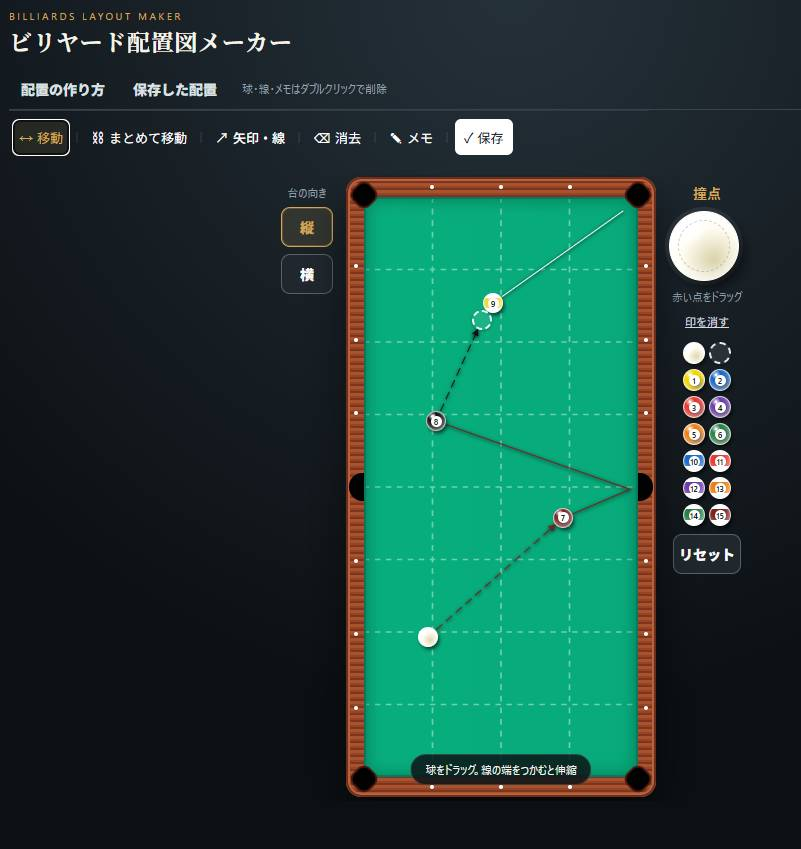

🎱 配置図メーカー
1〜15番と手玉を自由に配置。矢印・ライン・メモを加え、練習や試合で気になった配置を保存できます。
配置を残す。試合を振り返る。普段の対戦をカウントする。POOL NOTEは、ビリヤードで「あとで見返したい」をひとつにまとめるための記録ツールです。
球を置いて、コースを描いて、気になった配置を保存。
配置研究、大会の振り返り、普段の対戦。それぞれ目的が違うから、無理にひとつの記録にまとめず、必要なところだけ自然につながる設計を目指します。
1〜15番と手玉を自由に配置。矢印・ライン・メモを加え、練習や試合で気になった配置を保存できます。
大会名、日時、結果、対戦相手、スコア、メモを記録。保存した配置図を「この試合の配置」として引用できます。
普段の相撞きや練習ゲーム用のシンプルなカウンター。大会記録とは切り離して、気軽に使える機能です。
球をドラッグして置き、ショットラインや矢印を描画。色・太さ・メモも設定でき、保存した配置はあとから編集・画像保存できます。

大会ごとに対戦結果をまとめ、各対戦にメモを残せる想定です。配置図メーカーで保存した画像を引用すれば、「あの試合のあの配置」まで一緒に振り返れます。
大会ではなく、普段の相撞き専用。名前を入れてタップで得点を加算するシンプルなスコア画面です。大会記録や配置図との紐付けを前提にしない独立機能です。
ビリヤードをしていて「こういうのが欲しい」と思ったところから制作しています。配置を記録するだけではなく、実際に撞く人があとから振り返りやすい道具を目指して改良中です。
本サービスはビリヤードの記録・練習支援を目的として提供します。利用者は自己の責任で本サービスを利用するものとします。
本ページおよび各機能では、サービス提供に必要な範囲を超えて個人情報を収集しない方針です。
※機能追加に応じて内容を更新します。
使っていて気づいたこと、欲しい機能、不具合などはこちらから。
メールで問い合わせる →